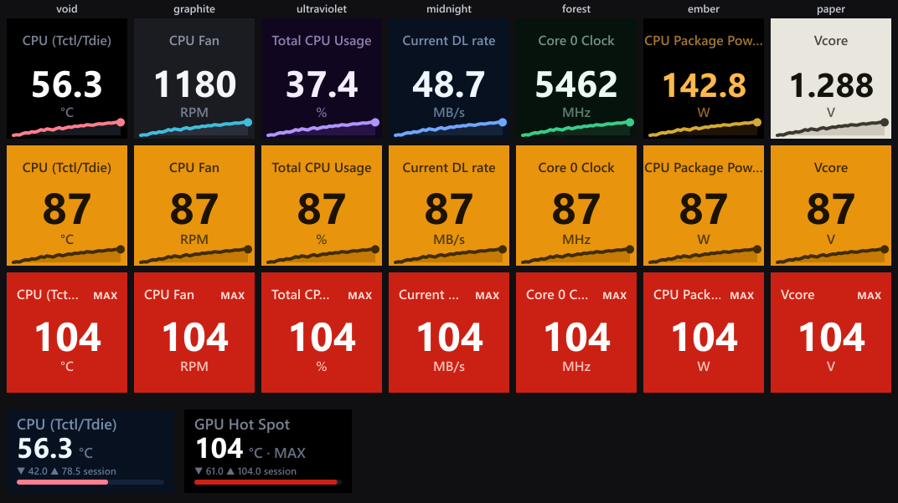

Precision instruments for the Windows desktop.
Small, honest tools that read your machine and respect it. No ads, no telemetry, open source. Built to be fast, quiet, and trustworthy.
HWiNFO Sensors for Stream Deck
Live HWiNFO hardware sensors on your Elgato Stream Deck, updated every second. The whole wall reads like one instrument.
Your hardware, at a glance
Put CPU and GPU temperature, clock speeds, fan RPM, usage and power on your keys and dials. Seven display themes, aviation-style amber warn and red critical alert colors, live sparklines, and full dial support on the Stream Deck + and + XL: rotate, push and touch gestures, rotation sets with named groups, and a Control key that drives dials from anywhere.

v1.3.0 · updated Jul 2026 · on the Elgato Marketplace
Principles
The same four rules apply to everything on this site, and everything that comes next.
No ads. Ever.
Nothing on screen you did not ask for. No upsells, no nags, no dark patterns.
No telemetry.
It runs entirely on your machine and phones home to nobody. It makes no network requests.
Open source.
Every line is on GitHub. Read it, audit it, or build it yourself from source.
Lean and efficient.
Measured in kilobytes and microseconds. Idle when nothing is changing, so it never taxes your rig.
Built by one person, on purpose.
I am slawrensen, an independent developer. I build small, honest tools for people who care how their machines run.
Every product here is made to be fast, quiet, and trustworthy: no accounts, no tracking, no lock-in. If it reads your hardware, it does so locally and tells you exactly what it does.
The work is open source, so you never have to take my word for any of it. The code is the documentation of intent.
Questions, bugs, or ideas go through GitHub Issues, where they are answered in the open.